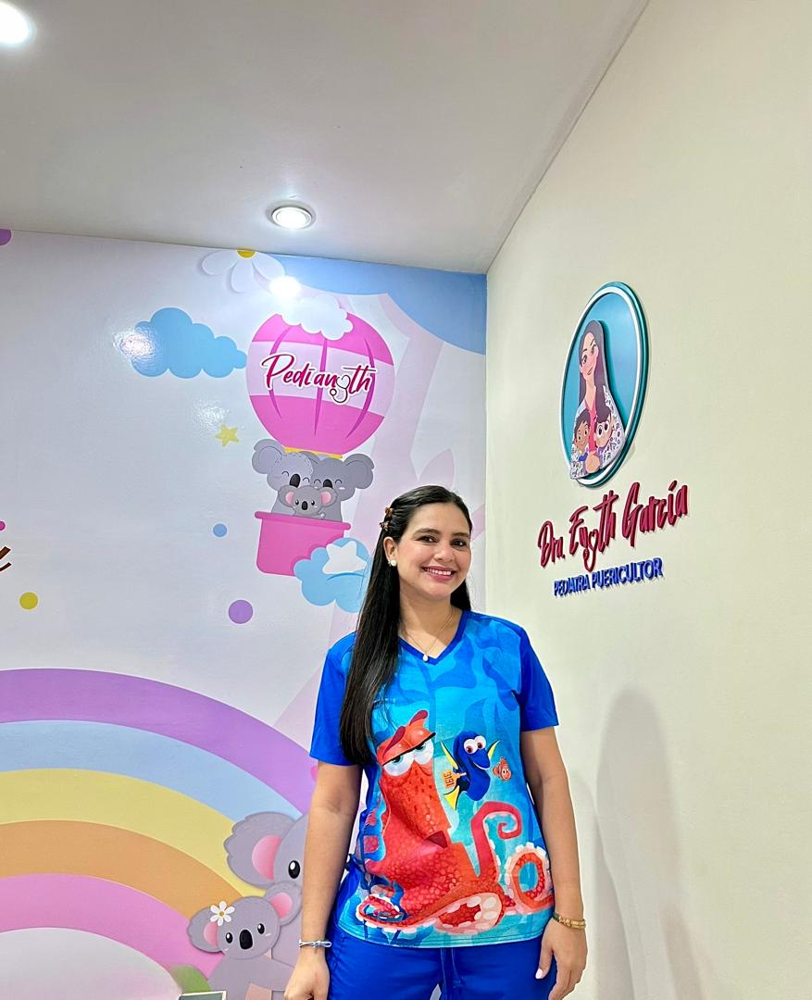

Consulta pediátrica
Consulta de niño sano, control pediátrico y atención de enfermedades de la infancia.
Un espacio para cuidar su salud, resolver tus dudas y acompañar cada etapa de la infancia.

Atención para los niños y orientación para quienes los cuidan. Todas las consultas son previa cita.
Consulta de niño sano, control pediátrico y atención de enfermedades de la infancia.
Asesorías para acompañarte durante la lactancia y conversar sobre tus dudas.
Asesoría para las familias en esta nueva etapa de la alimentación infantil.
Un primer encuentro para prepararte para la llegada de tu bebé.
Consulta por WhatsApp la disponibilidad y coordina tu cita.
Consultas en consultorio, a domicilio y en línea. Coordina la modalidad al agendar.
Este es un espacio para acercarnos y acompañar a tu familia en el cuidado de la infancia, la lactancia y la alimentación.
Próximamente, artículos y videos de la doctora. Estos son temas propuestos para las primeras publicaciones.
Un tema para acompañar el inicio de esta experiencia.
Tema propuesto · Pendiente de revisiónDudas para conversar sobre alimentación complementaria.
Tema propuesto · Pendiente de revisiónPreguntas para llevar a la consulta antes de la llegada del bebé.
Tema propuesto · Pendiente de revisiónEscríbenos para coordinar la fecha y la modalidad de atención.
WhatsApp +58 412-3578885 ↗Lunes a sábado, desde las 10:00 a. m.
Previa cita. Atención nocturna según coordinación previa.